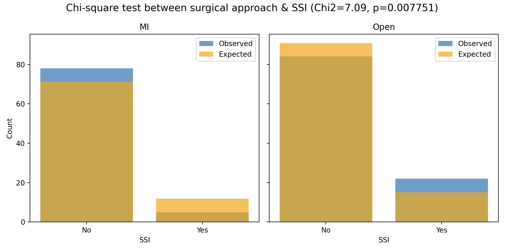
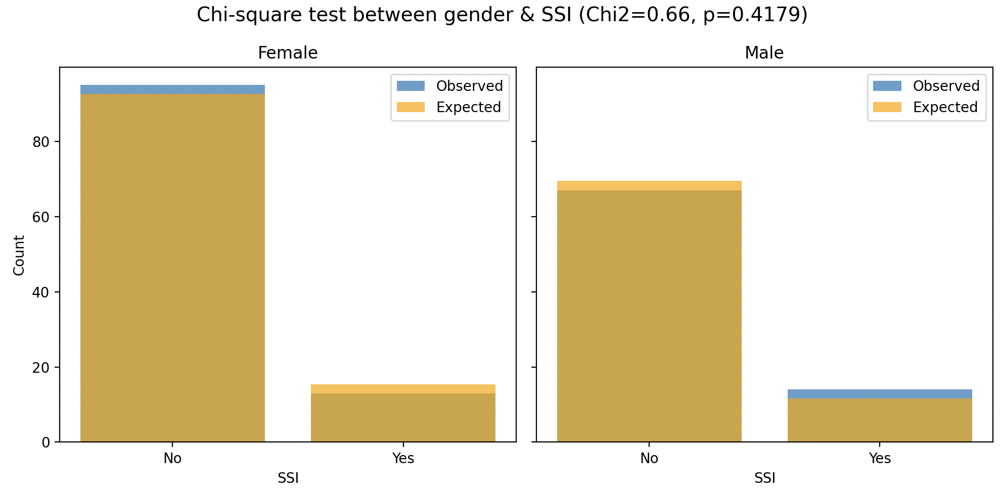
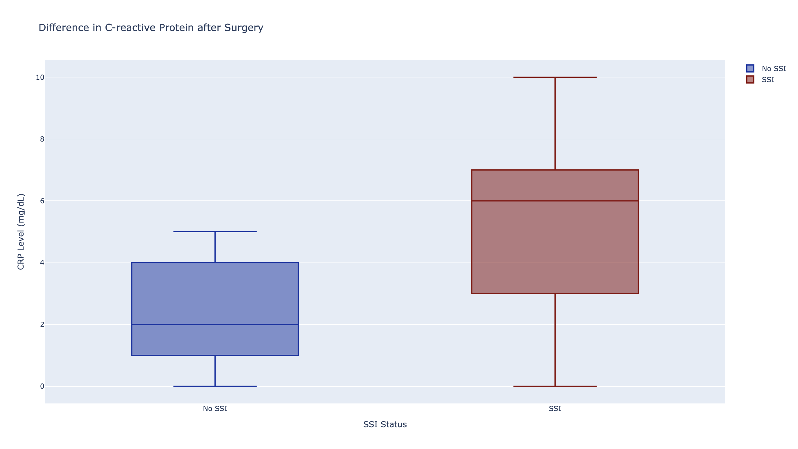
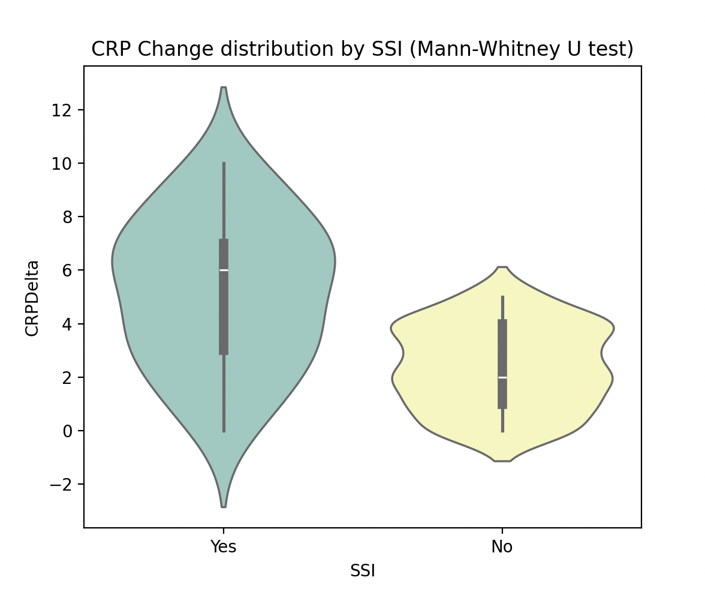

Project Overview
Using a public health's patient dataset, the project aims to identify what are the factors that are highly correlated to skin and soft tissue infection (SSI) - a condition where bacteria/fungi or virus invades the underlying skin tissues. SSI patients require a wide range of medical treatments, ranging from antibiotics to surgery that can be life-threatening. From statistical analysis, we identified and visualized three variables - surgical approach, Pre-Op Albumin, and C-reactive proteins levels - to be significantly associated with SSIs that can be targeted for prevention or diagnosis.
Methods
Patient dataset is provided by Dr. Juan Klopper (Department of Biostatistics and Bioinformatics) from Milken Institute School of Public Health, The George Washington University Washington D.C. Both statistical analyses and visualization are done using Python packages (Pandas, NumPy, Plotly, Scipy, Matplotlib and Seaborn, etc...)
Summary Results



